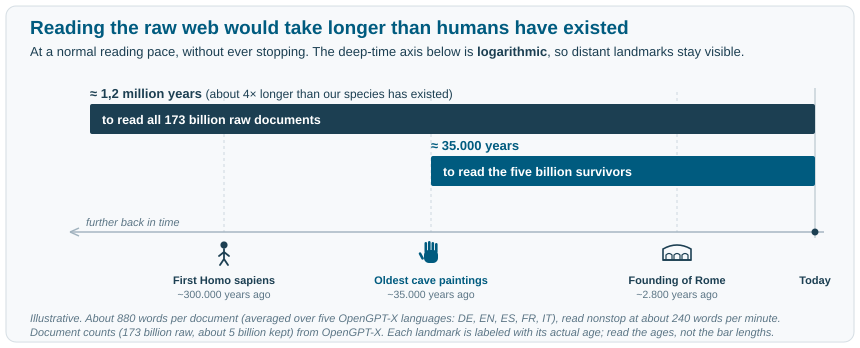
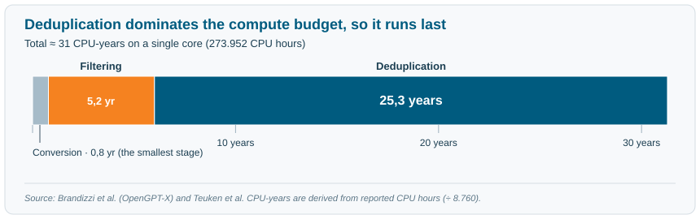
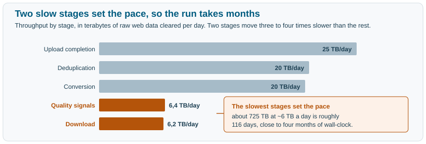

Working at scale
Last updated on 2026-11-02 | Edit this page
Overview
Questions
Objectives
Working at scale
When you treat the pipeline as pure logic, every step has a clean answer: keep this, drop that, record the rest. Put it at the true size of a web corpus and a second constraint appears behind every one of those answers, a price measured in machine time. This part is about what changes once compute is the thing in short supply, because some of the answers from Part 1 stop being affordable and others stop being possible.
Scale changes the problem
The web side of Teuken’s data started from 60 Common Crawl dumps, spanning late 2014 to early 2023. Together they held about 173 billion documents, roughly 703 terabytes of raw text, around 2,7 billion documents per dump. Numbers this large change what the steps from Part 1 mean in practice.
Take filtering. On average, 96,94% of web documents are removed during filtering (Brandizzi et al. 2024). The introduction set out why a number like that is a sign of success rather than failure: at web scale the input is known to be mostly navigation, boilerplate, and spam, so aggressive removal is the job working as intended. What the headline figure hides is how much still survives. Roughly 3% of 173 billion documents is on the order of five billion documents of far cleaner text, a large corpus in its own right.
Numbers this size are hard to feel, so start from a landmark and work outward. The founding of Rome was about 2.800 years ago, already deep history. Yet reading only the five billion documents that survive filtering, at a normal pace and never stopping, would take some 35.000 years, more than ten times as far back as Rome, as old as the first cave paintings. And the full raw collection of 173 billion documents would take on the order of 1,2 million years, about four times longer than our species has existed.

Figure 5: How long it would take a person to read the raw web, and the five billion documents that survive filtering. Read each bar by the age it reaches, not by its length.
A web corpus already holds far more text than any model needs, so the binding constraint becomes machine time. From here on the work is rationed by compute, and that budget is spent very unevenly across the steps.
Every decision is a compute decision
Once a step has a price, ordering it is an optimization. The pipeline runs its cheapest checks first so the expensive ones only ever see documents that already survived. A prefilter that costs almost nothing per document removes the obvious junk before any costly scoring or comparison runs, which means the expensive stages process a far smaller pile.
Scale also turns two more concerns into load-bearing engineering decisions:
- Lineage and versioning. Each stage writes its output in the same JSONL format and saves intermediate results, so any version can be compared with the one before it and a fault can be traced to the stage that introduced it. This is the traceability from Part 1.
- Storage and movement. Those intermediate results are copied to remote storage to guard against loss, which costs disk; and moving hundreds of terabytes between a processing cluster and a training cluster is slow and expensive enough that keeping the data where the model will train is itself a design choice.
None of this is visible in the final corpus, yet it is what keeps a multi-month pipeline from becoming unrepeatable.
Take the failure from Part 1’s metadata exercise, the corpus that turns out weak in one language (Part 1). If the pipeline saved its outputs after language detection and after later filtering, the two versions can be compared and the loss traced to the stage that introduced it. If those intermediate snapshots were discarded to save storage, diagnosing the failure turns into rerunning months of work.
Further reading
Poolside’s model factory describes an industrial version of exactly this idea: treating data processing as a versioned, monitored production line rather than a one-off script.
Deduplication is the expensive step
The clearest example of a logical step that is really a compute decision is deduplication. Of all the CPU time spent processing the web data, deduplication consumed about 80,8%, with filtering at 16,7% and format conversion at 2,5% (Brandizzi et al. 2024). Put in human terms, the three stages together come to about 273.952 CPU hours, close to 31 years of work for a single CPU core. Deduplication is around 25 of those years on its own. A cluster runs it in months by splitting the work across many cores, but the raw cost is the size of three decades on one machine.

Figure 6: How the web pipeline’s compute splits across its three stages.
That single number sets the pipeline order. Because comparing documents for similarity is so costly, you run it last, on the small fraction that survived everything else, never on the full raw pile. Order the stages the other way and you would pay the most expensive step on the 97% you were about to discard.1
Your turn
Deduplication is the most expensive stage and runs last; filtering removes about 97% of documents and runs earlier. Suppose an engineer, wanting “the cleanest data first,” reorders the pipeline to deduplicate before filtering. The output documents are identical either way. So what exactly does the reordering cost, and roughly by how much?
One way to reason about it
The factor that drives the cost is the number of documents deduplication has to compare: more documents means more comparisons, so the cost rises with the size of the input pile. Since filtering removes about 97% of documents, the “dedup first” order makes the most expensive stage process roughly 30 times as many documents for the same final corpus. Put in the same single-core terms as above: the ~25 core-years deduplication already costs would balloon to on the order of 750 core-years to produce an identical output. That is the whole reason the cheap, decisive cuts come first and the costly comparison comes last.
Compute time versus wall-clock time
Total CPU time measures the work; how long the calendar takes is a separate question. Every stage already spreads across thousands of cores, so they all parallelize equally well. What separates them, and sets the calendar, is throughput: how much data each stage clears per day, which depends on how much work a single document costs it.
Deduplication makes the point. It is the largest compute cost of all, four-fifths of the budget from the previous section, yet it moves through the data quickly: the cluster clears about 20 terabytes of raw data a day. The reason is the kind of work it does. Deduplication compares documents with a simple whitespace tokenizer and numeric similarity algorithms, cheap operations per document, so even though there are an enormous number of comparisons, each one is fast.
Computing the quality signals is the opposite case. Every document is read in full: content analysis and tokenization, the heavy lifting of the pipeline, run on each one, so the stage clears only about 6 terabytes a day. Downloading the raw data is slow for a different reason: its speed is set by network bandwidth from the source, not by how many cores you add, and it manages a similar 6 terabytes a day. These two stages, three to four times slower than the rest, set the pace, because the whole pipeline can finish no faster than its slowest stage.

Figure 7: Per-stage throughput, and the two slow stages that stretch the run to months. Bars show raw data cleared per stage per day, from the OpenGPT-X processing run of about 725 TB of raw web text, broader than the 60-dump set used for the final corpus.
This is the gap between compute and time. Pushing roughly 725 terabytes of raw web text through the pipeline, held to about 6 terabytes a day at the two slow stages, takes on the order of 116 days, close to four months, even on a large cluster.
And wall-clock time, not total compute, is the budget that actually binds. It is tied to the project’s lifetime: a project is allotted a compute window, and the corpus has to be ready inside it. Four months of wall time inside a one-year project is a very different proposition from the same corpus needing two years. Total core-years is what you pay for; wall-clock time is what you live by.
Key takeaway
Total compute time and wall-clock time are two separate budgets, and a real project is handed both at once: a fixed compute allocation and a deadline. Wall-clock time, tied to the project’s lifetime, is the one that ultimately binds, so the job is to fit the corpus inside the deadline without spending more than the compute you were given.
Recap
Scale does not add new steps so much as it re-prices the ones we already have. Once every decision carries a cost in machine time, the question behind each step shifts from what is correct? to what is affordable? That shift is the lesson of this part: at web scale, preparing data becomes an exercise in economics as much as logic. The order of the pipeline, the reach of a step like deduplication, even whether a step is possible at all, are settled by the compute budget rather than by correctness alone.
Both parts so far have rested on one assumption: that cheap, surface-level signals can separate good text from bad. Part 3 puts that assumption to the test.
Challenge
The same cost also forces a choice of scope: comparing every document against every other across all 60 dumps (a global deduplication) was impractical, since for a high-resource language like English the combined set was simply too large to process and brought no measurable benefit to the trained model. So deduplication was done locally, per dump and per language, which still removed about 30% of the data while staying inside the compute budget, the same logical goal with a different answer once the constraint is compute rather than correctness.↩︎